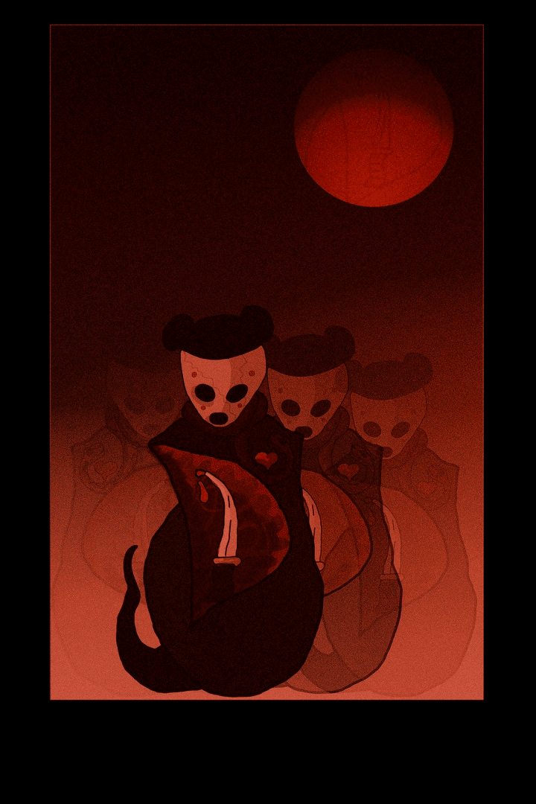

ТАНЕЦ НА КОСТЯХ ДАЙМОНОВ

Разрушающий человеческие иллюзии в жизни, ман предстаёт не только гневным, но и всепрощающим, милостивым, дающим надежду и покровительство. Он — борец с демоническими силами, один из его подвигов заключался в том, что он разрушил три города, созданные демонами-асурами.